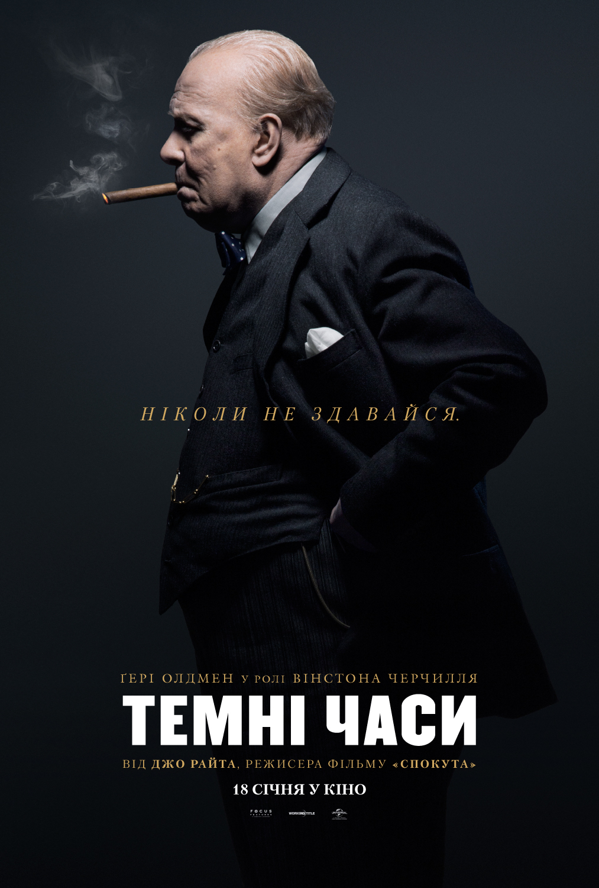

«Темні часи»
- Жанр: біографічна драма
- Режисер: Джо Райт
- У головних ролях: Ґері Олдмен, Бен Мендельсон, Крістін Скотт Томас
- Країна: Велика Британія
- Дата виходу: вересень 2017
«Темні часи» — британська історична біографічна драма 2017 року режисера Джо Райта. Стрічка розповідає про перші місяці Вінстона Черчилля як Прем'єр-міністра Великої Британії на початку Другої світової війни.

Історія про перший і вирішальний крок Вінстона Черчилля на посаді прем'єр-міністра Великобританії, який отримав владу при надзвичайних обставинах. Успіхи нацистської армії розбурхали британське співтовариство, але всупереч тиску і страху інших політиків Черчилль відмовляється йти на угоду з Гітлером.
1 2 3 4 5